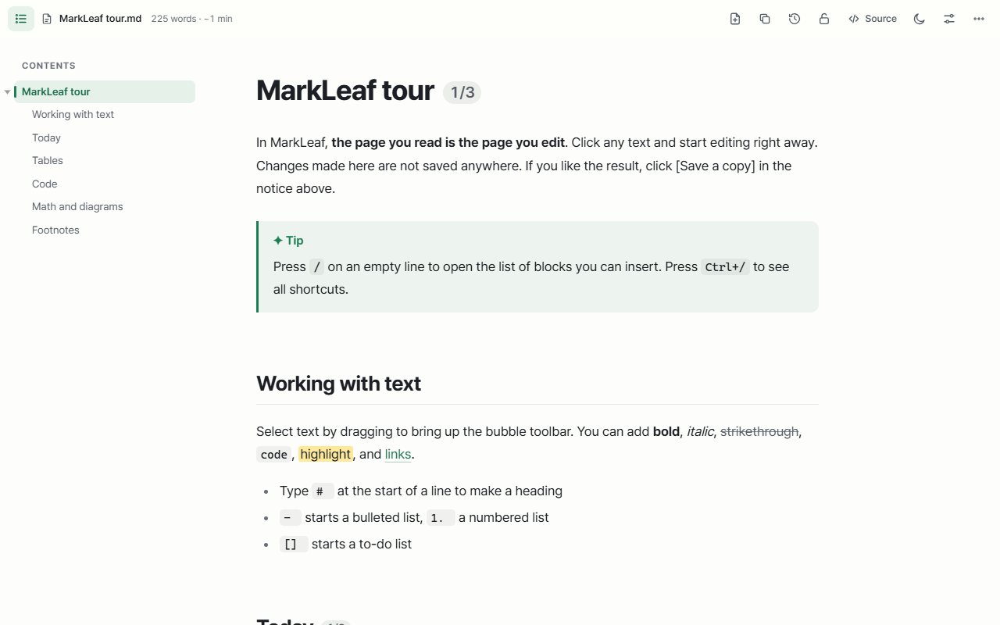
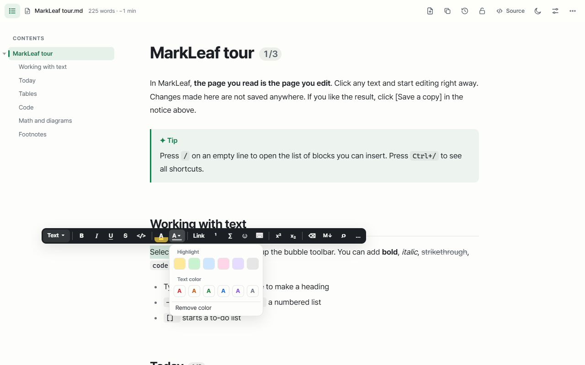
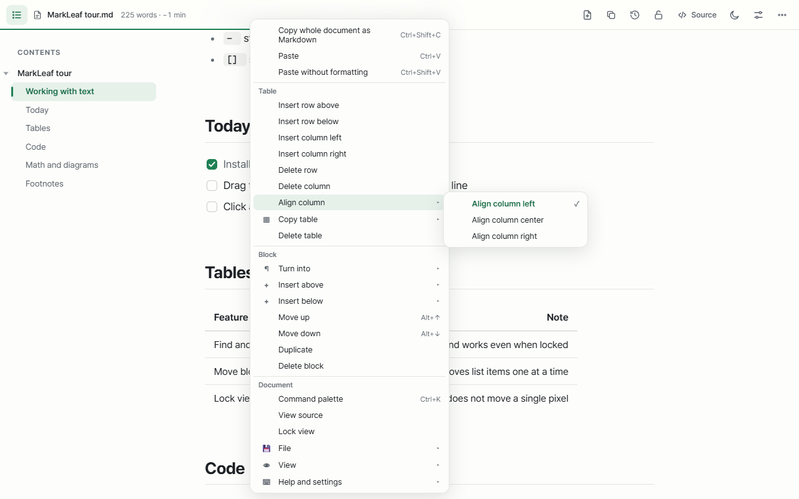
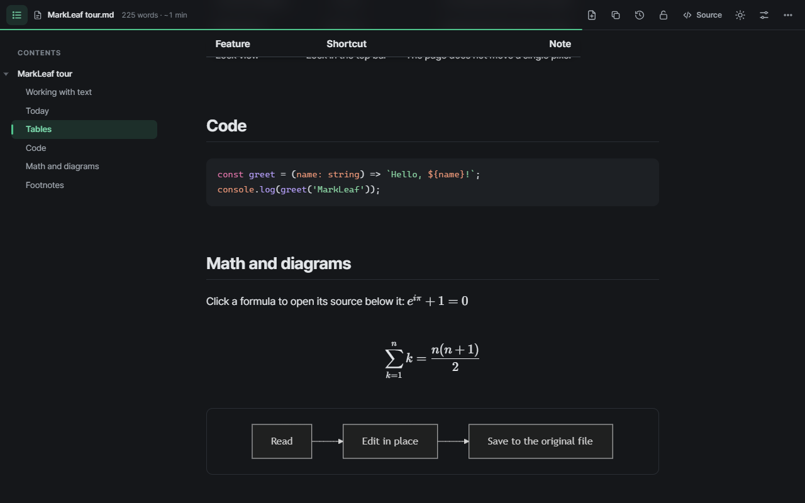
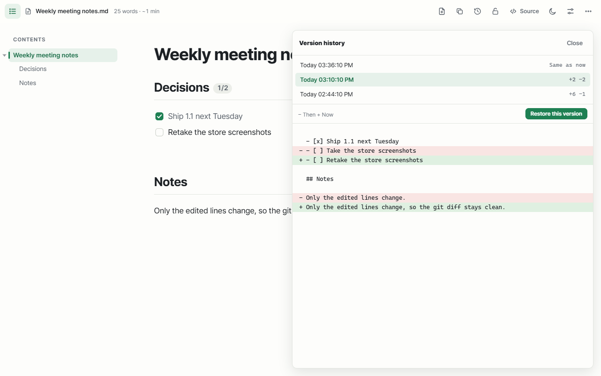

Markdown, beautifully. Edit right on the page.
MarkLeaf is a free Markdown viewer and editor for Chrome. Open any .md file as a clean document, click to edit it where you read it, and save back to the original file.
Add to Chrome — it's freeNo account. No servers. Your documents never leave your computer.

Why MarkLeaf
Most Markdown tools split the screen into source and preview. MarkLeaf has one screen: the page you read is the page you edit.
Drop a file, get a document
Drag a local .md file into Chrome, or open a GitHub "Raw" page. Headings, tables, code, math and diagrams render instantly.
Edit in place
Click any text and type. Press / for blocks, select text for the toolbox, right-click for a menu that knows tables, links and code.
Saves only what you changed
MarkLeaf writes back to the original file and keeps your formatting. Fix one word and git diff shows that one line.
Everything you need for Markdown in the browser
A full Markdown reader and a WYSIWYG-style editor, in one extension.
Format without leaving the page
- Toolbox for bold, italic, links, highlight and text colors
- Slash menu for headings, to-dos, tables, callouts and toggles
- Drag blocks with the ⋮⋮ handle, reorder table rows and columns

Right-click menus that understand your document
- Table, link, image, code and heading actions where you click
- Find and replace, command palette, focus and presentation modes

Math, diagrams and dark mode
- KaTeX math and Mermaid diagrams
- Code highlighting for 50+ languages
- Five themes, light and dark, custom fonts and widths

Version history and safe saving
- Every save keeps a local version you can compare and restore
- If another program changes the file, MarkLeaf shows a comparison instead of overwriting
- Export to PDF or a single HTML file

FAQ
How do I open a local .md file in Chrome?
Install MarkLeaf, then turn on "Allow access to file URLs" in Chrome's extension details for MarkLeaf (the welcome page has a button for it). Now drag any .md file into a Chrome window, or open it with a file:/// address. It shows up as a readable document.
Can I edit a Markdown file and save it back?
Yes. Click the text and edit. The first time you save, Chrome asks you to pick the file or allow its folder. After that MarkLeaf saves automatically when you pause typing, rewriting only the parts you changed.
Does it work with GitHub?
Markdown files opened with GitHub's "Raw" button are shown as documents. You can also allow other sites one at a time from the toolbar button.
Is my data sent anywhere?
No. MarkLeaf has no servers, analytics or tracking. All fonts and libraries are bundled in the extension. Read the privacy policy.
Does it work in Edge or Whale?
MarkLeaf is built for Chromium browsers. Edge and Whale can install it from the Chrome Web Store.
How much does it cost?
MarkLeaf is free.